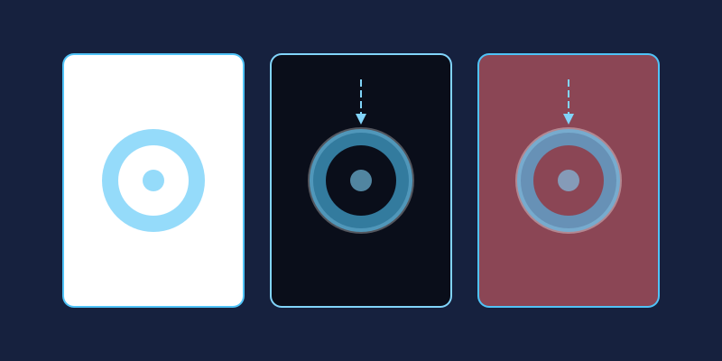

A logo trapped inside a white rectangle looks amateurish the moment it lands on a colored website header or a branded email template. Removing that box and replacing it with true transparency lets your graphics sit cleanly on any surface. Here is the complete workflow.
Why Transparency Matters
- E-commerce listings: Marketplaces often require product shots on pure white, but your own store may use colored sections where a transparent PNG blends perfectly.
- Logos: One transparent master file works on business cards, dark-mode websites, video watermarks, and merchandise without three separate versions.
- Overlays and stickers: Watermarks, badges, and decorative elements need transparency to layer over other content.
Step-by-Step: Cutting Out Your Subject
- Open your file in the editor. If the background layer is locked, double-click it to unlock.
- Select the background. For solid or evenly lit backgrounds, click once with the Magic Wand and raise the Tolerance value if patches remain unselected.
- Refine tricky edges. Hair, fur, and glass need the Lasso or a soft eraser at reduced opacity rather than a hard one-click selection.
- Delete the background. Press
Deletewith the selection active. The removed area should now display as a checkerboard pattern. - Zoom to 100% and inspect the edges. Stray halo pixels can be erased individually with a small brush.
- Export as PNG. This step is critical: JPEG does not support transparency and will fill empty areas with white. Always choose
PNGor another alpha-capable format.
What the Checkerboard Pattern Means
New editors often panic when they see gray-and-white squares appear. That checkerboard is not part of your image; it is the universal visual shorthand editors use to say "nothing exists here." When exported, those squares vanish completely, leaving genuine see-through pixels that adopt whatever color sits behind them on a webpage or document.
Common Mistakes to Avoid
- Saving as JPG: The number one error. Transparency silently becomes solid white.
- Ragged edges: A one-pixel fringe of the old background color betrays a rushed cutout. Zoom in and clean it up.
- Deleting shadows: A subtle drop shadow preserved on its own layer makes products look grounded instead of floating.
- Working at low resolution: Cut out from the largest file you have; scaling up afterward magnifies every edge flaw.
Why JPG Can't Do Transparency (and PNG Can)
Every image format stores color, but only some store see-through. A PNG file carries a dedicated alpha channel — an extra stream of data that records how opaque each pixel is, ranging from fully solid to completely invisible. JPG was engineered for photographs: it compresses color beautifully but has no concept of transparency at all. When you save artwork with empty areas as a JPG, the editor quietly fills every transparent pixel with solid white, producing the dreaded white box around your logo. That information is gone for good once the file is written, so there is no way to recover it from the JPG itself. In miniPhotoShop, simply pick PNG in the export dialog and the alpha channel travels safely with your image wherever it goes.
Reading the Checkerboard: What Transparent Really Looks Like
That gray-and-white checkerboard deserves a closer look, because misreading it causes real mistakes. The squares are a preview aid only: they exist in your editing window and nowhere else. They will never appear inside your exported PNG, and they are not a background color you still need to erase. One genuine danger does exist, though — flattening or merging an image while part of the canvas is still transparent can bake that emptiness into a permanent white layer. Train your eye to read the pattern correctly: wherever you see it, you are looking at pure potential, pixels waiting to adopt whatever color happens to sit behind your image on a webpage, slide, or print layout.
Keeping Cutouts on Separate Layers for Flexibility
The most resilient way to work is non-destructive: keep your cutout subject on its own layer at the top of the miniPhotoShop layers panel, with background layers stacked beneath it. Because the subject is isolated, you can drop in a clean white backdrop for one marketplace, a branded gradient for your website, and a lifestyle scene for social media — all without re-cutting anything. When a color scheme changes next season, you swap one background layer instead of redoing the entire edit. Lock the subject layer once its edges are clean so stray clicks never damage it, and always keep a layered master copy saved somewhere safe.
Testing Edges on Light and Dark Backgrounds
A cutout that looks flawless on a white canvas can fall apart the moment it lands on a dark website header. The culprit is anti-aliasing: to keep edges smooth, editors blend a thin ring of pixels between your subject and whatever surrounded it originally. On white, that faint fringe is invisible. Drop the same file onto navy or black and the leftover light halo glows around every curve like a bad outline. Test honestly by parking your cutout temporarily over both light and dark fills before exporting. If a halo appears, contract your selection inward by a pixel before deleting, or run an edge-decontamination pass that replaces fringe pixels with colors sampled from inside the subject. A minute of checking spares you an embarrassing glowing silhouette in production.

Where Transparent Images Shine
Once you own one clean transparent master, the uses multiply quickly. Logos sit perfectly on navigation bars, footers, and dark-mode layouts without awkward boxes trailing behind them. Product photos float over promotional banners in your online store instead of clashing with it. Presentations gain instant polish when diagrams blend into slide backgrounds rather than sitting in white rectangles. Video editors rely on transparent PNGs for watermarks, lower thirds, and callout stickers, while messaging platforms turn the very same files into custom emoji packs. Even email signatures benefit: a transparent logo stays elegant whether the recipient's mail client renders in light mode or dark.
Frequently Asked Questions
Which format should I choose for transparent images?
PNG is the dependable default for logos, icons, and graphics because it supports full alpha transparency while keeping sharp edges crisp. WebP also supports transparency and often produces smaller files, making it worth considering for websites. Avoid JPG entirely whenever see-through pixels matter.
Why does my exported PNG still show a white box?
Usually the wrong format was selected, or the background was erased on a flattened copy rather than the actual layer. Reopen your original file, confirm the checkerboard is genuinely visible in the editor, then export again and choose PNG explicitly instead of trusting the default settings.
How do I remove a busy, non-solid background?
Uniform backgrounds suit the magic wand, but cluttered scenes need manual work. Outline your subject roughly with the lasso, refine the boundary with a soft eraser at reduced opacity, and stay zoomed in around difficult areas such as hair or glass. Patience at the edges pays off enormously.
Does transparency affect file size?
Slightly, and usually in your favor. Empty areas compress extremely efficiently, so a transparent PNG is often smaller than the same canvas filled with detailed texture. Very large photographic images saved as PNG can grow heavy, though — for photography consider WebP with alpha, and reserve transparency mainly for graphics.
Can I add transparency back to a JPG later?
Not directly. The alpha channel was never stored, so those white areas are now ordinary painted pixels indistinguishable from any other white. You would need to select and delete the background again exactly as shown in the steps above, then export as PNG to restore true transparency.
With one clean transparent master saved, you can resize, recolor, and repurpose it across every platform your brand touches.